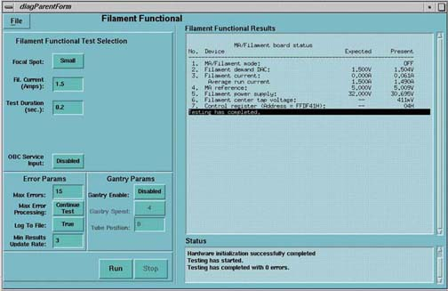

Proprietary to General Electric
Direction 5114045-800, Rev# 10
LightSpeed 4.X Service Information (Advanced)
Proprietary to General Electric |
[SERVICE DESKTOP] -> [DIAGNOSTICS] -> [X-RAY GENERATION] -> [FILAMENT SELECT]
Illustration 1: Filament Diagnostic Screen

This diagnostic allows the operator to manually control the filament circuit.
Run this test when filament errors are detected.
Test can indicate if the small and large filament circuit is swapped.
Great test for manually troubleshooting filament circuit.
The filament transformer center tap voltage can aid in troubleshooting focal spot relay failures:
(Filament Current = 3A Duration = 3S
Spot = Large - Approximate center tap voltage = 4V
Spot = Small - Approximate center tap voltage = 3V)
Low voltages for high filament current values indicate short.
Maximum test duration is as follows:
1.5A < filament current <= 3A: 1800 S maximum duration
3A < filament current <= 5A: 10 S maximum duration
5A < filament current <= 10A: 1 S maximum duration